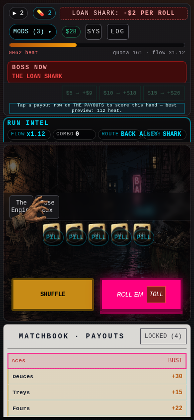

High-fidelity captures use production index.html (real dice faces, hand sprites, alley art). Layout proposal only: CSS in proposals/option-a.css injected at capture time.
index.html
proposals/option-a.css
node docs/ux-mocks/scripts/capture-proposals.cjs
